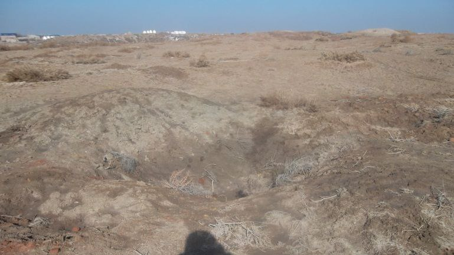
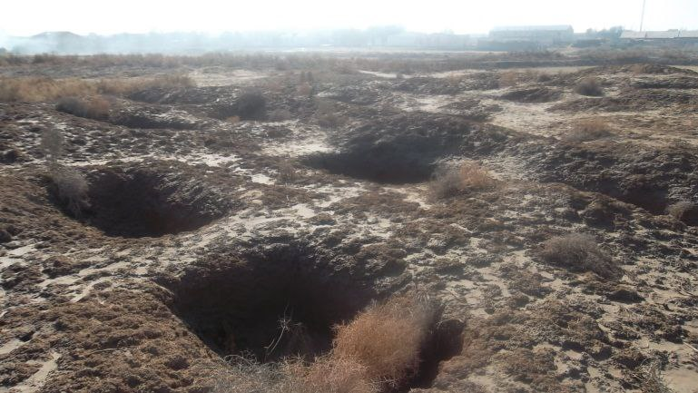

"OLMAOTISHGAN"
1. Me’moriy inshootning nomi:
"OLMAOTISHGAN"
2. Me’moriy inshoot tiklangan yil:
мил. I-IV ва VII-VIII асрларга оид.
3. Me’moriy inshoot joylashgan manzil:
мил. I-IV ва VII-VIII асрларга оид.
4. Me’moriy inshootning qurilish materiallari:
Xom g‘isht, paxsa - guvala, qum, yog‘och
5. Inshootning bosh fasadi h.k.lar:


6. Me’moriy inshootning o‘lchamlari
Olmaotishgan-I maydoni 161x170 m,
7. Me’moriy inshoot to‘g‘risida tarixiy ma’lumot:
Olmaotishgan-I –Yodgorlikni qadimda to‘rt tomoni teng xom g‘ishtli devor o‘rab olgan. Maydoni 161x170 m. Devorda burjlar qoldigi sezilib turibdi. Yodgorlikning saqlanib qolgan balandligi yer satxidan 7-8m. Shimoliy - g‘arbiy tomonida darvoza joylashgan bo‘lib, kengligi 4m. Olmatishgan-II – Olmaotishgan –I yodgorligidan 130-150 m janubda joylashgan. Yodgorlik antik davrda vujudga kelgan, milodiy V-VII asrlarda kiska vakt ichida hayot takrorlangan, keyinchalik hayot XIII asr boshlarigacha davom etgan.
Birinchi qurilish davrida paxsa devor tekis xududga qurilgan bo‘lib, uning kengligi 2m, balandligi 0,85 sm. Ichki devor ham ham paxsadan tiklangan. qalinligi 1,5m, balandligi 0,85sm, ular o‘rtasidan 2m kengligida yulak o‘tgan. Bu qurilish davrida mudofaa devor qalinligi 5,5m bo‘lgan. Bu tarixiy qurilish davrda burj yarim aylana paxsadan tiklangan.
Ikkinchi qurilish davrida tashki va ichki devorda xom g‘ishtdan devor qurilgan bo‘lib, balandligi 1,5m. Mudofaa devor va burj qurilishida to‘rt tomoni teng xom g‘isht ishlatilgan (36x36x8, 33x33x10sm)..
8. Me’moriy inshootning texnik holati:
Yer ustki qism 100% devor konstruksiyalari ekologik va texnogen ta’sirlar natijasida yo‘qolib ketgan
BOSH SAHIFAGA QAYTISH